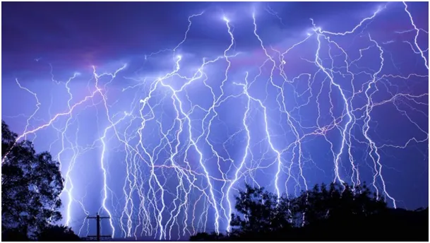
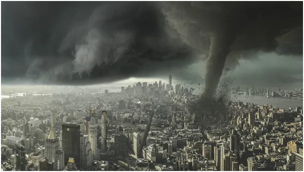
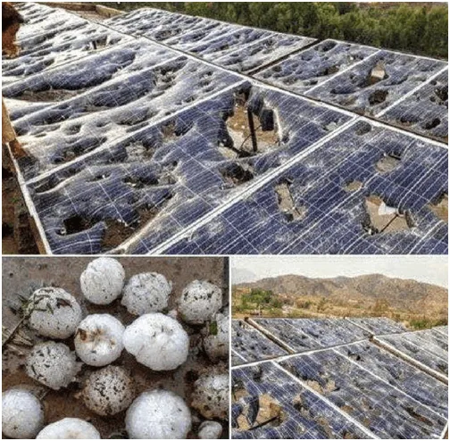
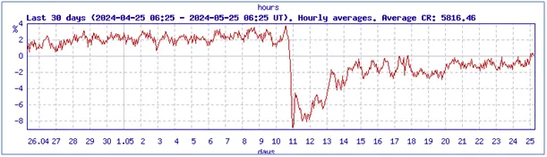
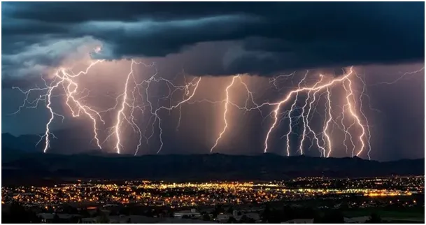
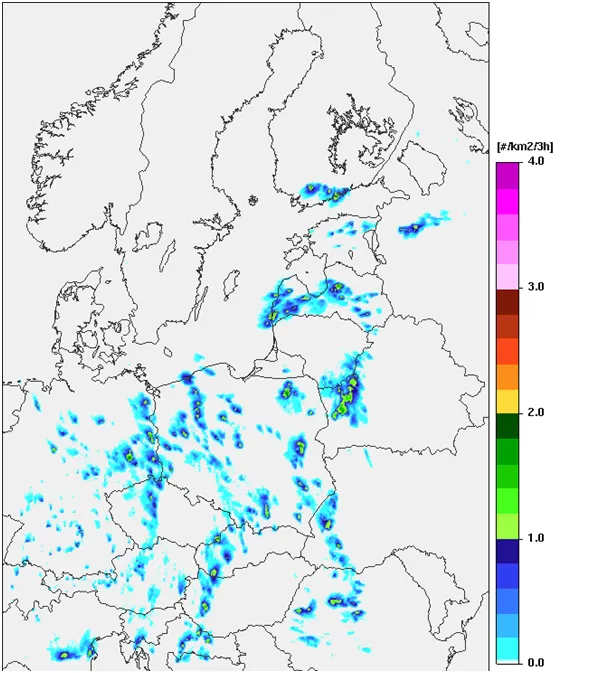

Jak zatrzymać tornado wybuchem jądrowym.
Burza to skutek gwałtownego przepływu ciepłego powietrza wysoko do zimnej atmosfery. Zimne powietrze wtedy opada, często wewnątrz chmury powstają poziome wiry, gdzie cząsteczki wody wielokrotnie są unoszone z wysokości ok. 1-2 km na 5-10 km. W tym wirze zamarzają tworząc duże grudki lodu. Po wielu takich pętlach potrafią urosnąć do wielkości jajka.

Im większa robi się chmura, tym mniej pod nią promieni słonecznych. Zacieniona ziemia stygnie i strumień wznoszący słabnie. Zarazem rośnie waga gradzin i w pewnym momencie już brak siły wznoszącej i grad opada na Ziemię, nie omijając elektrowni fotowoltaicznych.

Podczas wirowania lodowych kulek, następuje ich naelektryzowanie. Wysoka energia cząstek gazu, rozrywa je na jony, czyli dodatnie kationy, jądra atomowe z neutronami i ujemne aniony, swobodne elektrony. Naelektryzowana chmura szuka sposobu wyrównania potencjałów i w postaci łuku elektrycznego wysyła nadmiar ładunków do Ziemi lub do jonosfery. Chmury mogą też wymieniać się ładunkami między sobą.
Jonosfera dwa tygodnie po burzy magnetycznej nadal jest mocno naładowana, co ma swoje znaczenie w procesach powstawania chmur. Widać to na wykresie z Olu:

Energia wyładowania to średnio +-140 kWh, czyli w ułamku sekundy uwalniana jest energia jaką duży samochód potrzebuje, aby jechać dobrze ponad 200 km/h przez godzinę pod wiatr. Bardziej obrazowy może być wybuch 120 kg trotylu, na tym filmie widać destrukcję furgonetki przy użyciu 8 kg
Takie wyładowania trwają na Ziemi nieustannie co ułamek sekundy. Niech to będzie inspiracją do myślenia o tym, jak słabi i mali jesteśmy na Ziemi i czy możemy mieć wpływ na atmosferę. Prawo zachowania energii jest bezwzględne. Możemy "rozdmuchać" jedną lokalną burzę, ale aby powstrzymać małe tornado należy użyć wielkiej bomby atomowej. Wystarczy do wnętrza tornada wrzucić taką bombę i zamiast tornada mamy atomowy grzyb.

Dziś nad Polską ICM zapowiada wiele burz, będą powstawały nagle. Mapka daje orientacyjną liczbę burz i ich zasięgi, ale gdzie powstaną trudno przewidzieć.

Paweł Klimczewski